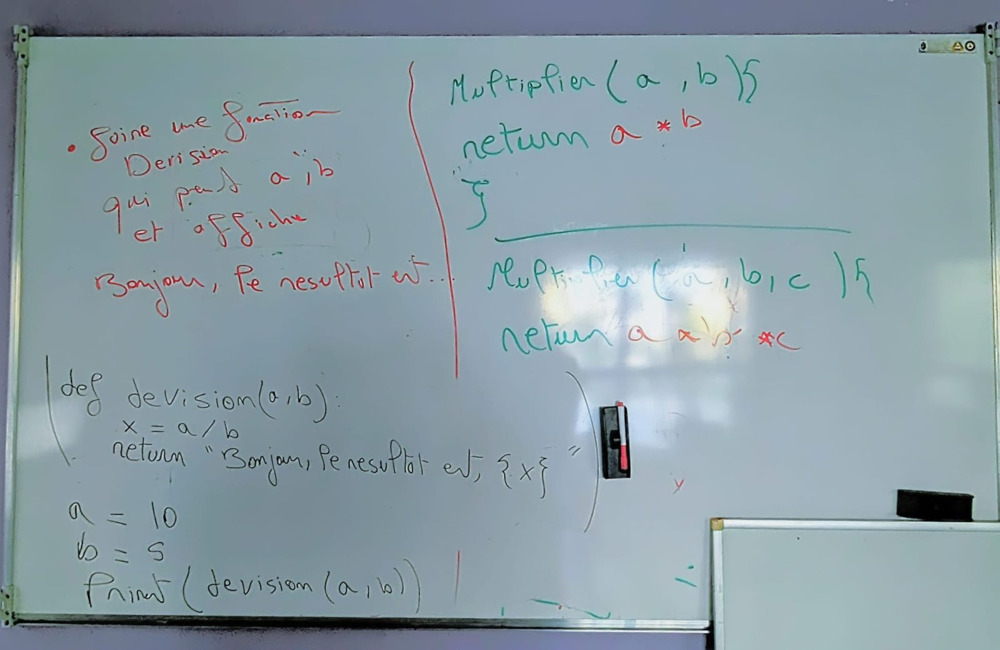

Rappel de cours : les fonctions
Le tableau du cours : créer une fonction avec def, lui donner des paramètres (a, b) et renvoyer un résultat avec return. Clique sur la photo pour l'agrandir.

Le blog
Les souvenirs du 92Lab en images : ateliers, sorties, événements… Clique sur une photo ou une vidéo pour la voir en grand !
Pas encore de photos dans cette catégorie, ça arrive bientôt !
Le tableau du cours : créer une fonction avec def, lui donner des paramètres (a, b) et renvoyer un résultat avec return. Clique sur la photo pour l'agrandir.

Le site officiel de Python : c'est ici qu'on télécharge Python pour l'installer sur son ordinateur.
Aller sur python.org ↗L'éditeur de code gratuit pour écrire et tester ses programmes Python.
Télécharger VS Code ↗Un cours complet pour débutants, avec des explications simples et des exemples.
Ouvrir le cours ↗La documentation officielle en français : pour aller plus loin une fois les bases acquises.
Ouvrir le tutoriel ↗Pour installer Scratch sur son ordinateur et programmer même sans connexion internet.
Télécharger Scratch ↗Un tutoriel pas à pas pour apprendre à utiliser Scratch.
Ouvrir le tutoriel ↗Un guide pour créer son premier jeu avec Scratch.
Ouvrir le guide ↗Les antisèches (rappels de cours et liens utiles) arrivent bientôt !